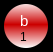

| Choisissez votre langue ! | Choose your language ! |
Toute pensée formalisée s'exprime de nos jours dans le langage de la théorie des ensembles, qui a ainsi envahi toutes les disciplines.
Nous exposons ici, la théorie 'naïve' des ensembles, qui constitue le langage actuel des mathématiques.
Nous donnons les principales définitions sous forme intuitive, en donnant des exemples, et en introduisant les symboles qui sont largement utilisés dans le discours mathématique.
Juste pour prendre un exemple, nous considérerons dans ce chapitre, quelques objets que nous appellerons 'éléments' .
Chacun de ses objets possède plusieurs caractéristiques:
Voici un exemple d'un tel élément:
Couleur rouge, forme 'cercle', nom 'b', numéro 1.
Il n'est nullement indispensable de considérer a priori des éléments ayant des propriétés (ou attributs) mais cela facilite la visualisation, le repérage, et met en relief que chaque élément doit être clairement identifiable, de façon non ambiguë. Nous utiliserons également cet artifice pour la définition des ensembles en 'compréhension'.
Voici un exemple d'ensemble E formé au hasard avec des éléments comme ceux décrits ci-dessus:
All formalized thought is expressed today in the language of set theory, which has thus invaded all disciplines.
We expose here, the 'naive' theory of sets, which constitutes the current language of mathematics.
We give the main definitions in intuitive form, by giving examples, and by introducing symbols that are widely used in speech mathematical.
Just to take an example, we will consider in this chapter, some objects that we will call 'elements' .
Each of these objects has several characteristics:
Here is an example of such an element:
Color red, shape 'circle', name 'b', number 1.
It is by no means essential to consider a priori elements having properties (or attributes) but this facilitates visualization, identification, and emphasizes that each element must be clearly identifiable, unambiguously. We will also use this artifice for the definition of sets in 'comprehension'.
Here is an example of a set E formed at random with elements like those described above:
L'ensemble proposé ici est écrit en 'extension' , c'est à dire que tous les éléments sont listés entre accolades, et séparés par des virgules, sans 'omission' (on n'en oublie aucun), ni 'répétition' (chaque élément est écrit une seule fois).
Dans une telle représentation, l' ordre des éléments n'a aucune importance . On peut, bien sûr, considérer des ensembles formés à partir d'autres éléments, des ensembles de symboles (lettres), des ensembles de nombres.
On peut également former des ensembles peuplés d'objets du monde 'réel', ensembles de locaux, de personnes, etc...
Les exemples physiques posent souvent des problèmes au niveau de la définition même.
L'ensemble des élèves d'une classe paraît, à première vue, non ambigu; mais s'agit-il de fait de l'ensemble des élèves assistant régulièrement au cours ou bien de ceux inscrits officiellement sur les listes? etc., etc.
L'ensemble des grains de sable contenus dans un verre, suppose que l'on ait définit la taille minimale d'un tel 'grain' etc..., etc...
Les exemples mathématiques semblent ne pas poser de telles difficultés mais des paradoxes existent aussi qui ne peuvent être éliminés dans le cadre de la théorie 'naïve'.
L'ensemble des présidents de la 5ième république française, désigne-t-il l'ensemble des présidents 'élus' ou l'ensemble des personnes ayant 'rempli les fonctions' de président (le président du Sénat a été deux fois dans cette situation)?
x ∈ E
qu'on lit aussi x appartient à E et dans le cas contraire, si x n'est pas élément de E:x ∉ E
qu'on lit aussi x n'appartient pas à ELe langage Python, dans sa version 3.4 intègre un objet 'set' pour représenter les ensembles. Voici un premier programme qui fabrique quelques ensembles et les affiche à l'écran.
Le programme qui suit saisit des ensembles au clavier:
Le programme qui suit teste l'appartenance d'éléments à un ensemble:
Le langage Julia, dans sa version 1.6 intègre un objet 'Set' pour représenter les ensembles. Voici un premier programme qui fabrique quelques ensembles et les affiche à l'écran.
Le programme qui suit saisit des ensembles au clavier:
Le programme qui suit teste l'appartenance d'éléments à un ensemble:
The set proposed here is written in 'extension or roster form' , that is, all the elements are listed in braces, and separated by commas, without 'omission' (we don't forget any), nor 'repetition' (each element is written only once).
In such a representation, the order of elements does not matter . We can, of course, consider sets formed from other elements, sets of symbols (letters), sets of numbers.
We can also form populated sets of objects from the world 'real', sets of premises, people, etc ...
The physical examples often pose problems at the level of the very definition.
All students in a class appear, at first glance, unambiguous; but is it in fact of all the pupils attending the course regularly or many of those officially registered on the lists? etc., etc.
All grains of sand contained in a glass, suppose we have defines the minimum size of such a 'grain' etc ..., etc ...
The mathematical examples do not seem to pose such difficulties but paradoxes also exist which cannot be eliminated within the framework of the 'naive' theory.
All the presidents of the 5th French Republic, he designates all the 'elected' presidents or all the people who have 'fulfilled the functions' of president (the president of the Senate was twice in this situation)?
x ∈ E
that we also read x belongs to E and otherwise, if x is not an element of E:x ∉ E
that we also read x does not belong to EThe Python language, in its version 3.4 integrates a 'set' object to represent the sets. Here is a first program which makes some sets and displays them on the screen.
The following program enters sets on the keyboard:
The following program tests the membership of elements in a set:
The Julia language, in its version 1.6, includes a 'Set' object to represent the sets. Here is a first program which makes some sets and displays them at the screen.
The following program enters sets from the keyboard:
he following program tests the membership of elements in a set:
|
Création Gilles Dubois
Created by Gilles Dubois
|
Janvier 2022
January 2022
|
Version mobile Jquery
Mobile Jquery version
|